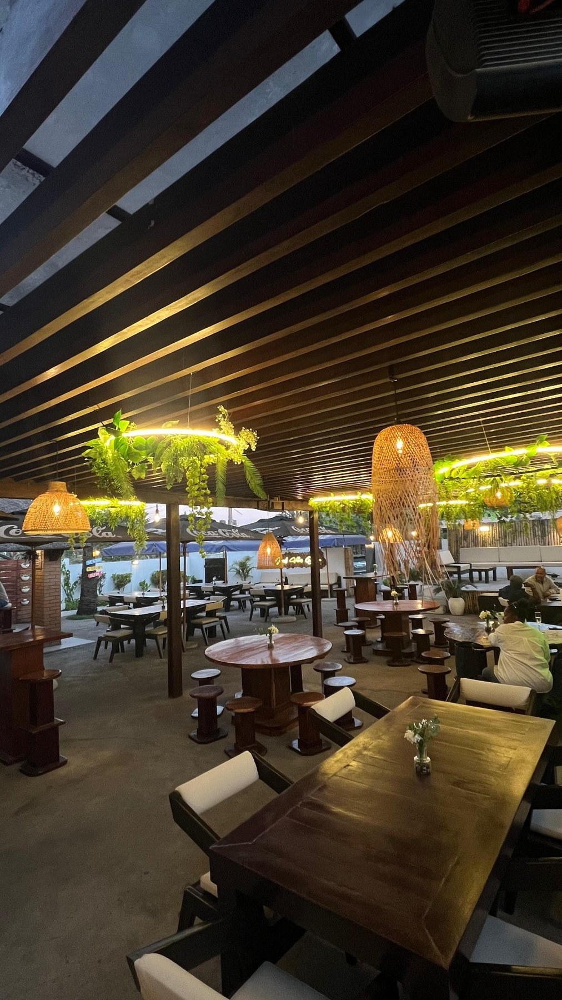
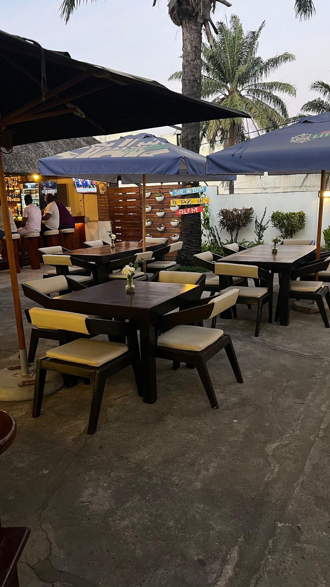
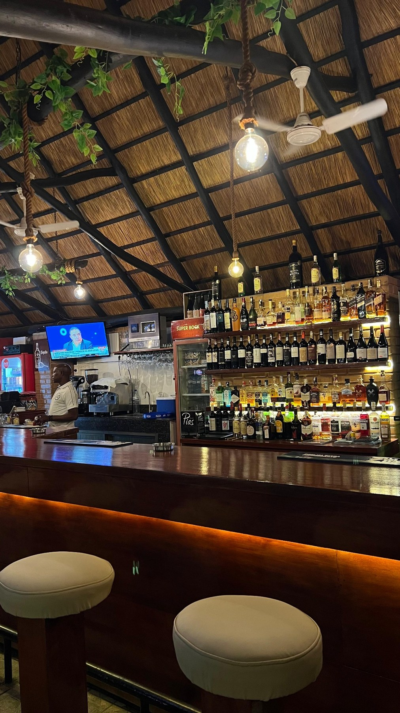
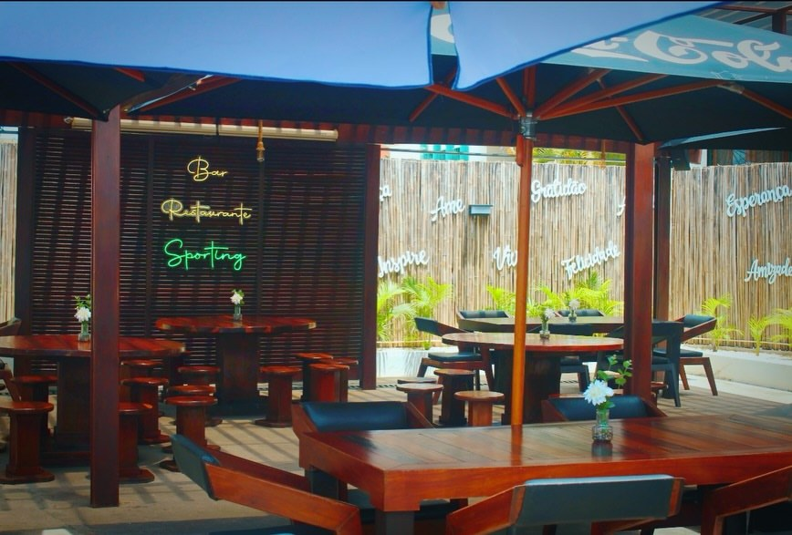
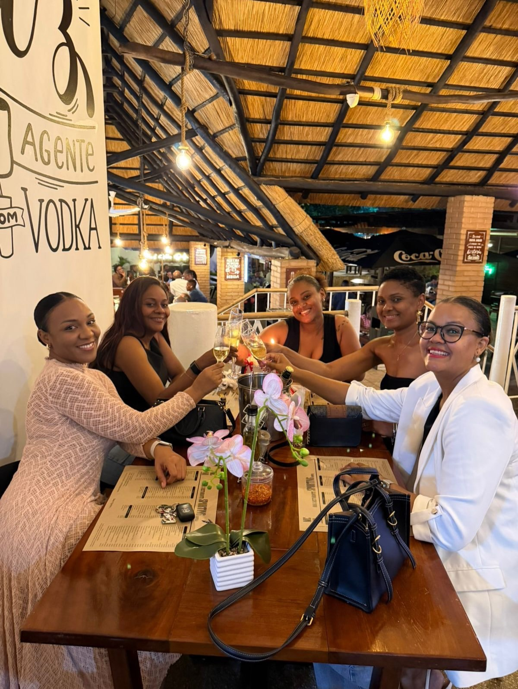
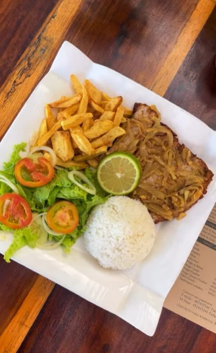

Segunda a Sábado · Nampula
O melhor ambientepara comer, brindare ficar em Nampula.
Sporting Bar & Restaurante reúne boa comida, bebidas, esplanada e um espaço elegante para amigos, famílias e encontros especiais.



Sobre o Sporting
Um ponto de encontro premium em Nampula.
O Sporting Bar & Restaurante é um espaço feito para reunir amigos, famílias e bons momentos, onde o ambiente acolhe e a comida acompanha.
Com menu variado, bar completo, esplanada, petiscos, carnes, peixe, mariscos, snacks e sobremesas, o Sporting foi pensado para quem quer comer bem e viver um momento agradável.
Melhor restaurante de Nampula
Boa companhia, boa comida e um ambiente que faz a gente querer ficar.
Escolha o prato, informe o horário e envie o pedido. A equipa recebe uma mensagem clara para confirmar a sua reserva.
Reservas e pedidos
Envie uma mensagem pronta, clara e organizada.
Preencha os dados. O botão abre o WhatsApp com nome, contacto, horário, número de pessoas, pedido e observações.
Galeria
Ambiente, bar, esplanada e bons momentos.
Localização
Sporting Bar & Restaurante, Nampula.
Use o botão abaixo para abrir a localização no Google Maps. Caso precise, ligue ou envie mensagem antes de sair.